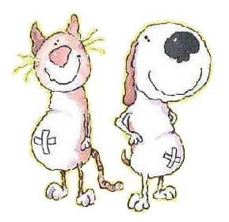

DONATION

ONE DAY MEAL .... ₹2000
Celebrate your special moments with us. The One Day Meal covers the morning and evening feed for a day for our 162 dogs,19 cats,1 sheep, 1 goat, 2 calves and 2 cows.

VACCINATION .... ₹600
Covers 1 round of vaccination for 1 resuced dog. Help our streeties to get boosted immunity and fight against disease.

MEDICINES .... ₹2500
It covers general medicines like 1 ltr Betadine solution, 10 nos bandage roll, 1 cotton roll, 10 nos Cepladine powder and 1 box of surgical gloves which helps in dressing the open wounds of shelter animals.

VEGETARIANS ZONE .... ₹10,000
It covers the monthly needs of cows, calves, goats and sheep- like dry grass, vegetables, ragi, dry fodder and husk.

STERILIZATION.... ₹1500
Covers the neutering or spaying charges and anti - rabies vaccine for a rescued indie dog.
STERILIZATION.... ₹1500
Covers the neutering or spaying charges and anti - rabies vaccine for a rescued indie dog.

PASSIVE PARENTS .... ₹2000
You can passively adopt any of the shelter animals. WSA will look after them and feed and vaccinate them, for a small contribution from your end.